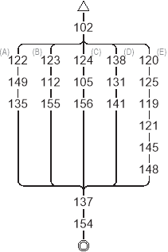
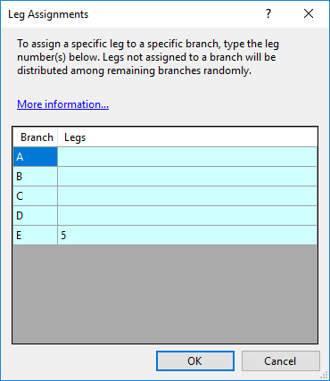
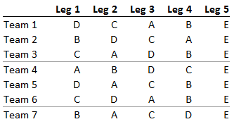

Leg Assignments
The Leg Assignments dialog allows assigning specific legs to specific branches of a forked course. Each fork is displayed in a matching color.
For example, suppose you have a forked relay with 5 legs like the following:

If you want the last leg of the relay to have all competitors on fork E, place "5" next to leg "E", as follows:

Legs A, B, C, and D, will be distributed randomly, since they were not assigned to a specific leg, giving variations like the following:

You can assign more than one leg to a fork by typing multiple leg numbers, separated by commas.